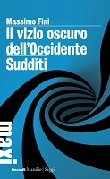
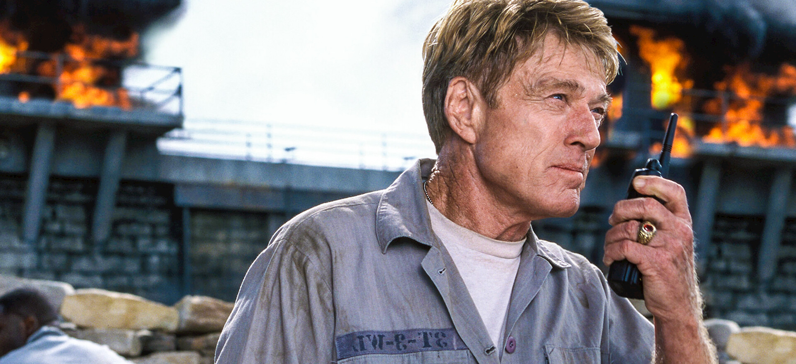

30:35 · 5 OPERE
Solidarietà con Francesco Toscano e Vox Italia TV.
Il filo del discorso
Dr Divago esprime solidarietà a Francesco Toscano e a Vox Italia TV per una sospensione del canale che giudica ingiusta. Il caso introduce una riflessione sul rapporto fra libertà di parola, potere e autonomia del pubblico. L’uomo a una dimensione di Marcuse e Sudditi di Massimo Fini forniscono i riferimenti espliciti per descrivere una società che, secondo il relatore, tende ad amministrare gli individui invece di renderli cittadini.
Leggi la sintesi completaRiduci la sintesi
Alla concentrazione del potere egli associa il controllo dell’informazione e l’educazione al conformismo, leggendo in questa prospettiva anche le misure della pandemia. I casi di Byoblu e KenFM ampliano il discorso, senza che siano presentati i provvedimenti originari o prove degli attacchi informatici denunciati. Una scena del Castello con Redford e Gandolfini illustra poi una manipolazione indiretta: creare scarsità per provocare conflitti e giustificare l’intervento dell’autorità. Il richiamo alla repressione della stampa fascista, alla legge nazista del 1934 e alla detenzione di Assange rafforza l’allarme del relatore, ma richiede distinzioni fra epoche, atti pubblici e decisioni di piattaforme. La parte finale difende anche la libertà di chi ascolta, elogia la rassegna Controcanto e riprende il verso della rosa di Stein come immagine della resistenza dei fatti. La scheda conserva l’appello al confronto senza adottare accuse, equivalenze storiche o generalizzazioni sanitarie prive di riscontro.
I libri nel discorso

L’uomo a una dimensione
Note sul riferimento
Copertina: Einaudi, Piccola Biblioteca Einaudi, 1999
Copertina di un’edizione bibliografica dell’opera, con introduzione di Luciano Gallino. La citazione nel video resta probabile; questa edizione non vi è confermata.
Marcuse, L’uomo a una dimensione, nel tema della scomparsa dell’individuo.

Sudditi. Manifesto contro la democrazia
Note sul riferimento
Copertina della raccolta: COPERTINA DELLA RACCOLTA Il vizio oscuro dell’Occidente e Sudditi, Marsilio, Tascabili Maxi, 2012, 224 pagine, ISBN 9788831711623. Sudditi fu pubblicato separatamente nel 2004, I grilli, 147 pagine, ISBN 9788831784122. Non si attribuisce al video la raccolta del 2012.
Copertina ufficiale Marsilio azzurra, nera e bianca, con entrambi i titoli leggibili. L’immagine raffigura la raccolta che comprende il saggio.
Massimo Fini, Sudditi, esplicitamente richiamato nella trasformazione del cittadino in suddito.

Il castello (The Last Castle)
Identificazione probabile
Note sul riferimento
Immagine promozionale del film: IMMAGINE PROMOZIONALE del film The Last Castle, DreamWorks, 2001, distribuita nella scheda Netflix: Robert Redford come Eugene Irwin con ricetrasmittente nel carcere. Non è una copertina libraria né la locandina originale.
Immagine autentica della scheda del distributore, vista intera: Redford in abiti da detenuto, ricetrasmittente e incendio sullo sfondo. È un’immagine del film identificato, non la prova della specifica scena narrata. I crediti di regia e sceneggiatura provengono da Paramount; non si attribuisce la sceneggiatura agli attori.
Film con Robert Redford generale detenuto e James Gandolfini comandante della prigione; riscontro The Last Castle, titolo non ricordato.

Satira X, dalle Satire
Identificazione probabile
Note sul riferimento
Copertina della raccolta: COPERTINA DELLA RACCOLTA The Sixteen Satires, Penguin Classics, 1 febbraio 1999, 320 pagine, traduzione, introduzione e note di Peter Green, ISBN 9780140447040. La Satira X è contenuta nella raccolta completa, non pubblicata in questo volume come opera autonoma.
Copertina ufficiale Penguin, intera: dipinto antico con due figure, fascia bianca e nera con autore e titolo della raccolta. Non è una selezione che omette la Satira X.
Panem et circenses, richiamo latino riconducibile alla Satira X di Giovenale, senza nome dell’autore.

Sacred Emily
Identificazione probabile
Note sul riferimento
Copertina della raccolta: COPERTINA DELLA RACCOLTA Geography and Plays, University of Wisconsin Press, ISBN 9780299134747, introduzioni di Sherwood Anderson e Cyrena N. Pondrom. Edizione del 1993 e ristampa datata 5 dicembre 2012 nel catalogo del libraio, 434 pagine; Google Books conteggia 447 pagine. Il testo originale del 1922 contiene Sacred Emily, pagine 178–188.
Copertina autentica della raccolta Wisconsin con ritratto di Stein e titolo giallo; non copertina di una poesia pubblicata autonomamente. Il testo e il verso della rosa sono riscontrati nell’edizione integrale del 1922, non nella raccolta Tender Buttons.
Gertrude Stein, ripetizione della rosa, riconducibile al verso di Sacred Emily; titolo della poesia non pronunciato.